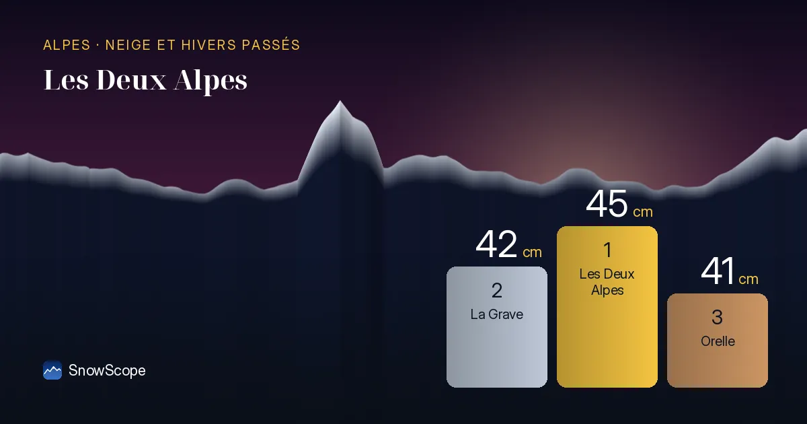
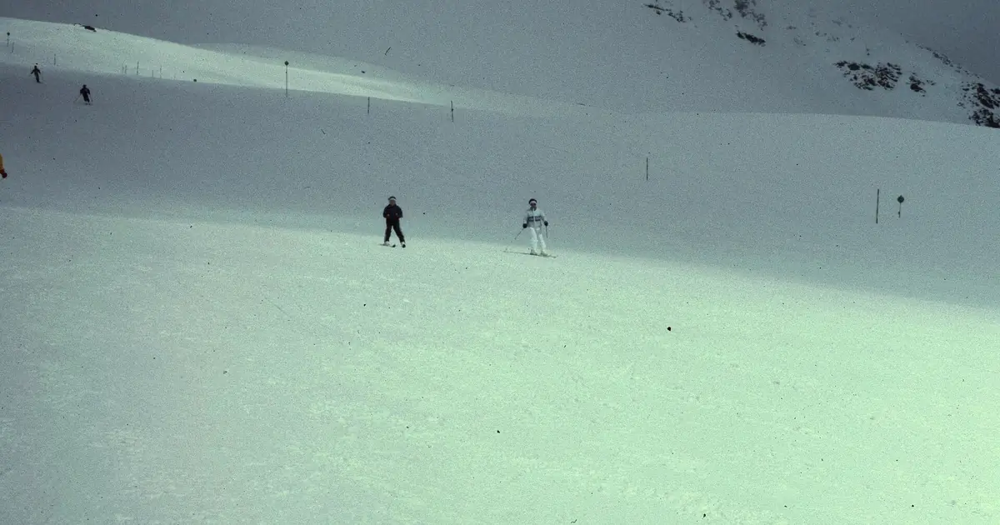
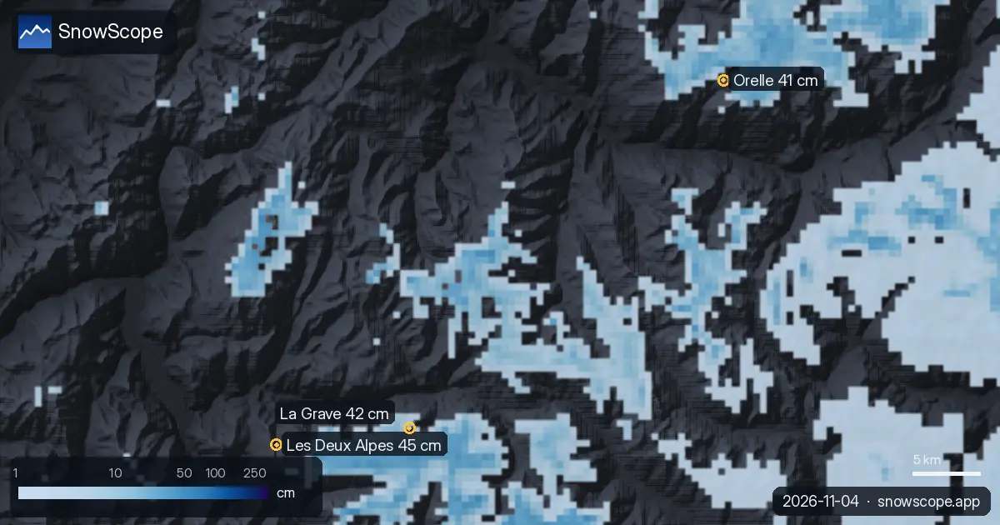

Les Deux Alpes : 45 cm au sommet, zéro neige en bas
Les Deux Alpes montre aujourd'hui le fossé d'altitude extrême du début novembre : 45 centimètres sur les pentes hautes mais zéro neige en bas. Cet écart conditionne où vous pouvez skier en ce moment.
Consultez les prévisions neige en temps réel pour Les Deux Alpes sur l'application SnowScopeHauteurs de neige, alertes poudreuse et carte 3D, gratuitement.
L'écart d'altitude
En début d'automne à la montagne, le niveau de congélation raconte d'abord l'histoire. Aujourd'hui à Les Deux Alpes, il se situe entre 2 310 et 2 350 mètres. Au-dessus de cette ligne, la neige tombe et s'accroche ; en dessous, la pluie lave le sol. Ainsi nous mesurons 45 centimètres sur les pentes hautes à 3 511 mètres, mais rien en bas à 1 284 mètres — un écart vertical de plus de deux kilomètres.
Ce n'est pas inhabituel pour le début novembre dans les Alpes élevées. Les montagnes sèches du sud de la France suivent ce schéma : sommets blancs, vallées brunes. Mais cela façonne ce qui est skiable. Les terrains en dessous de 2 400 mètres sont minces ou dégagés. Les pentes hautes gardent la neige. Si vous prévoyez un voyage, l'altitude compte complètement en ce moment.
| Station | Hauteur de neige | Neige fraîche, 72 h | Attendu, jours suivants | Sommet |
|---|---|---|---|---|
| Les Deux Alpes | 45 cm | 2 cm | 24 cm | 3 511 m |
| La Grave | 42 cm | 3 cm | 28 cm | 3 543 m |
| Orelle | 41 cm | 3 cm | 16 cm | 3 221 m |

Plus fin que d'habitude
Le vrai problème surgit à mi-hauteur. Autour de 2 397 mètres — une altitude typique de mi-pente — notre modèle de neige montre zéro centimètre aujourd'hui. En année normale, en regardant 46 hivers passés, à cette date nous voyons environ 8 centimètres. Donc Les Deux Alpes tourne sous la moyenne de novembre. Nous sommes plus profonds que seulement 8 de ces 46 années, plaçant cette saison dans la catégorie inférieure pour la neige précoce.
Ce genre de manque de neige en début de saison se produit certaines années. L'air chaud et la pluie dominent les premières semaines de novembre. Les montagnes restent largement brunes jusqu'à ce que décembre casse la tendance. Les trois prochains jours nous diront si cette année suit ce chemin ou si la neige prévue change le tableau.

La fenêtre des prévisions
Une amélioration arrive. Notre modèle de neige prévoit 24 centimètres de neige nouvelle du 5 au 7 novembre. Le 6 novembre apporte la neige la plus abondante, avec 18 centimètres. Mais l'air reste chaud jusqu'au 6 novembre : le niveau de congélation atteint 2 640 mètres le 5 novembre et 2 360 mètres le 6 novembre. Ainsi une grande partie de la neige nouvelle se dépose sur les sommets tandis que les mi-pentes gagnent de la neige plus lentement.
Vers le 7 novembre l'air se refroidit et le niveau de congélation chute autour de 2 260 mètres maximum. La neige atteindra mi-hauteur plus sûrement. Mais la base de la station restera probablement sèche. Les rochers et la couche mince restent des aléas sur les pentes basses pendant des jours après l'arrivée de neige nouvelle.
Neige à chaque altitude
Au sommet (3 511 m), 45 centimètres aujourd'hui plus 29 centimètres supplémentaires prévus signifient du bon ski pour ceux qui peuvent atteindre les terrains hauts. Les mi-pentes autour de 2 397 mètres ont zéro maintenant mais gagneront environ 16 centimètres d'ici le 7 novembre alors que la neige nouvelle descend. C'est toujours très mince ; les rochers sont un vrai risque. La base à 1 284 mètres reste nue selon le modèle, avec zéro centimètre prévu. Les rochers dominent les terrains de base.
Si vous prévoyez de visiter Les Deux Alpes dans les trois prochains jours, concentrez-vous sur les pentes hautes et les crêtes. Si vous êtes flexible, attendre jusqu'au 7 novembre — quand l'air se refroidit et la neige atteint mi-hauteur plus sûrement — vous donne un meilleur ski.
Les Alpes dans leur ensemble
Les Deux Alpes s'inscrit dans un schéma plus large à travers les Alpes. En ce moment, 760 stations ont un couvert de neige sur 1 178, selon l'imagerie satellite du 1er novembre. La région montre 43 150 kilomètres carrés sous la neige. La Grave, de l'autre côté de la vallée, a 42 centimètres sur les pentes hautes. Orelle au sud a 41 centimètres. L'histoire se répète partout : début de saison, sommets hauts seulement, bases nues. Les prévisions dessinent le même schéma à travers la chaîne ; la plupart de la neige nouvelle tombera au-dessus de 2 400 mètres.
Ce que cela signifie maintenant
Si vous visitez Les Deux Alpes dans les prochains jours, les pentes hautes sont votre terrain. Consultez le bulletin d'avalanche officiel avant tout ski hors-piste, car la couche mince de début de saison et la neige nouvelle sur l'ancienne surface peuvent cacher des aléas. La base n'est pas prête encore. C'est le ski de novembre en montagne : la patience et l'altitude gagnent.
Conseils aux skieurs
- Les pentes hautes à 3 511 mètres ont 45 centimètres maintenant ; c'est votre meilleur terrain pour les trois prochains jours.
- Évitez les terrains en dessous de 2 400 mètres jusqu'après le 7 novembre. La base à 1 284 mètres reste nue ; les rochers la dominent.
- Le 6 novembre apporte 18 centimètres de neige nouvelle, mais surtout sur les pentes hautes au-dessus de 2 400 mètres. Attention aux rochers quand la neige nouvelle recouvre l'ancienne surface.
- Consultez le bulletin d'avalanche officiel avant tout ski hors-piste ; la neige fine du début de saison peut cacher des aléas.
- Si vous êtes flexible, attendre jusqu'au 7 novembre offre un meilleur ski dans toute la station, car le niveau de congélation chute autour de 2 260 mètres.
À propos de ces chiffres
Les hauteurs de neige des stations sont la neige la plus épaisse sur le haut du domaine, d'après le modèle de neige SnowScope (environ 1 km, calcul du 4 novembre) ; ce sont des estimations pour une zone, pas une mesure en un point. Les valeurs des stations de mesure sont mesurées à la date indiquée. Les prévisions peuvent changer. Consultez toujours le bulletin d'avalanche officiel avant le hors-piste.
Bulletins d'avalanche officiels: EAWS (Alps)
Citer ce bulletin
Pour la recherche, l'enseignement ou la presse : chiffres et graphiques réutilisables librement sous CC BY 4.0 avec cette citation.
SnowScope (2026), Les Deux Alpes : 45 cm au sommet, zéro neige en bas, https://snowscope.app/blog/fr/2026/11/alps-snow-vs-past-winters-4-november-2026.html, consulté le 2026-11-04
SnowScope (Atlas Labs). (2026, November 4). Les Deux Alpes : 45 cm au sommet, zéro neige en bas. SnowScope snow reports. https://snowscope.app/blog/fr/2026/11/alps-snow-vs-past-winters-4-november-2026.html
BibTeX
@misc{snowscope2026alpssnowvspastwinters4no,
author = {{SnowScope (Atlas Labs)}},
title = {Les Deux Alpes : 45 cm au sommet, zéro neige en bas},
year = {2026},
month = nov,
howpublished = {\url{https://snowscope.app/blog/fr/2026/11/alps-snow-vs-past-winters-4-november-2026.html}},
note = {Published 2026-11-04 14:49 UTC; accessed 2026-11-04}
}· CC BY 4.0 · Méthodes, données et outils →
Les Deux Alpes : neige et température selon l'altitude, cet hiver vs l'hiver dernier (outils) →
Suivre Les Deux Alpes
Gratuit : un message quand la neige arrive, et la météo chaque matin.
Autres bulletins neige

De la neige fraîche est tombée sur les hautes montagnes françaises au cours des 72 dernières heures. Le massif du Mont-Blanc en a reçu le plus : 180 cm. Données du 18-11-2026.

Bulletin neige dans les Alpes, 18 novembre. Nous avons pesé la neige déjà au sol, la neige fraîche des 72 dernières heures et ce qu'ajoute la …

50 cm en haut du domaine : voilà pourquoi La Grave est en tête de notre liste. Nous avons combiné la hauteur de neige du jour, la neige fraîche des …